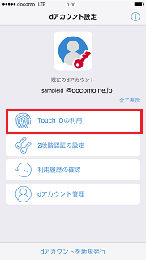
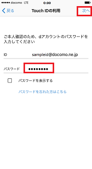
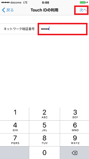
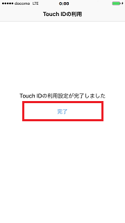

Touch IDにdアカウントを紐付けすることにより、対応のドコモサービスサイト／アプリ内でID／パスワードの入力をすることなく、Touch ID認証でログインが可能となります。
※予めTouch IDの設定、パスコードの設定が必要です。
※Touch ID非対応端末ではご利用いただけません。
-
【1】トップ画面で「Touch IDの利用」をタップします。

-
【2】dアカウントのIDのパスワードを入力し「次へ」をタップします。

-
【3】dアカウントがドコモの回線契約者の場合のみ表示されます。
ネットワーク暗証番号を入力し「次へ」をタップします。

-
【4】Touch IDに登録している指でホームボタンに触れます。

-
【5】完了した旨のメッセージが表示されたら完了です。

-
-閉じる